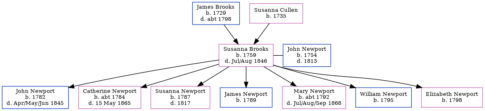

Susanna Newport (née Brooks) 1759 - 1846
[ Home ] | [ Calendar ] | [ Surnames Index ] | [ Errors ] | [ Family History ]The child of James Brooks and Susanna Cullen, Susanna Brooks, the 4 times great-grandmother of Nigel Horne, was born in Barham, Kent, England in 17591, was baptised there on 23 Dec 1759 and also married John Newport (with whom she had 7 children: John, Catherine, Susanna, James, Mary, William and Elizabeth) there on 22 Oct 17803. In 1841, she was living in Sibertswold, Kent, England1.
She died in Jul/Aug 1846 in Eastry, Kent, England2 and was buried in Great Hardres, Kent, England on 25 Aug 18463.
Parents
- James was born in 1729
- Susanna was born in 1735
Children
- John was born in 1782
- Catherine was born c. 1784
- Susanna was born in 1787
- James was born in 1789
- Mary was born c. 1792
- William was born in 1795
- Elizabeth was born in 1798
Citations
- 1841 England Census Online publication - Provo, UT, USA: The Generations Network, Inc., 2006.Original data - Census Returns of England and Wales, 1841. Kew, Surrey, England: The National Archives of the UK (TNA): Public Record Office (PRO), 1841. Data imaged from the National
- England & Wales, FreeBMD Death Index: 1837-1915 Online publication - Provo, UT, USA: The Generations Network, Inc., 2006.Original data - General Register Office. England and Wales Civil Registration Indexes. London, England: General Register Office. © Crown copyright. Published by permission of the Cont
- Public Member Trees Online publication - Provo, UT, USA: The Generations Network, Inc., 2006.Original data - Family trees submitted by Ancestry members.Original data: Family trees submitted by Ancestry members.
Family Tree
Map
Generated by ged2site. Last updated on Jul 3, 2024
Known Issues
Date of baptism (23 Dec 1759) before date of birth (1759)